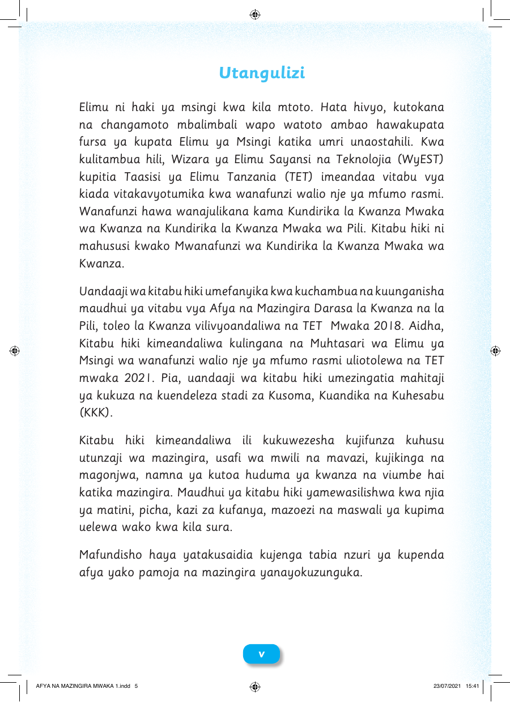

Utangulizi Elimu ni haki ya msingi kwa kila mtoto. Hata hivyo, kutokana na changamoto mbalimbali wapo watoto ambao hawakupata fursa ya kupata Elimu ya Msingi katika umri unaostahili. Kwa kulitambua hili, Wizara ya Elimu Sayansi na Teknolojia (WyEST) kupitia Taasisi ya Elimu Tanzania (TET) imeandaa vitabu vya kiada vitakavyotumika kwa wanafunzi walio nje ya mfumo rasmi. Wanafunzi hawa wanajulikana kama Kundirika la Kwanza Mwaka wa Kwanza na Kundirika la Kwanza Mwaka wa Pili. Kitabu hiki ni mahususi kwako Mwanafunzi wa Kundirika la Kwanza Mwaka wa Kwanza. Uandaaji wa kitabu hiki umefanyika kwa kuchambua na kuunganisha maudhui ya vitabu vya Afya na Mazingira Darasa la Kwanza na la Pili, toleo la Kwanza vilivyoandaliwa na TET Mwaka 2018. Aidha, Kitabu hiki kimeandaliwa kulingana na Muhtasari wa Elimu ya Msingi wa wanafunzi walio nje ya mfumo rasmi uliotolewa na TET mwaka 2021. Pia, uandaaji wa kitabu hiki umezingatia mahitaji ya kukuza na kuendeleza stadi za Kusoma, Kuandika na Kuhesabu (KKK). Kitabu hiki kimeandaliwa ili kukuwezesha kujifunza kuhusu utunzaji wa mazingira, usafi wa mwili na mavazi, kujikinga na magonjwa, namna ya kutoa huduma ya kwanza na viumbe hai katika mazingira. Maudhui ya kitabu hiki yamewasilishwa kwa njia ya matini, picha, kazi za kufanya, mazoezi na maswali ya kupima uelewa wako kwa kila sura. Mafundisho haya yatakusaidia kujenga tabia nzuri ya kupenda afya yako pamoja na mazingira yanayokuzunguka. vv AFYA NA MAZINGIRA MWAKA 1.indd 5 23/07/2021 15:41